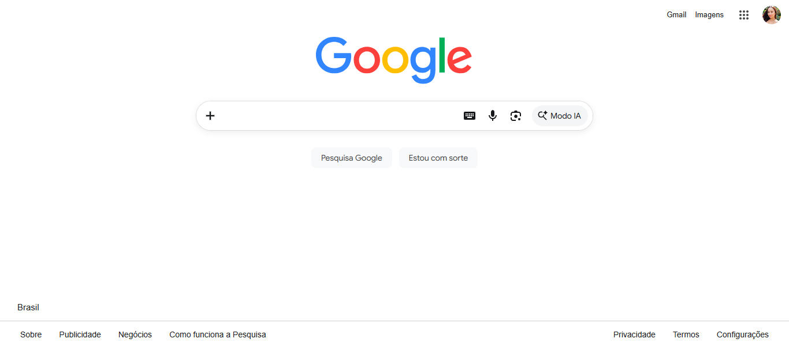
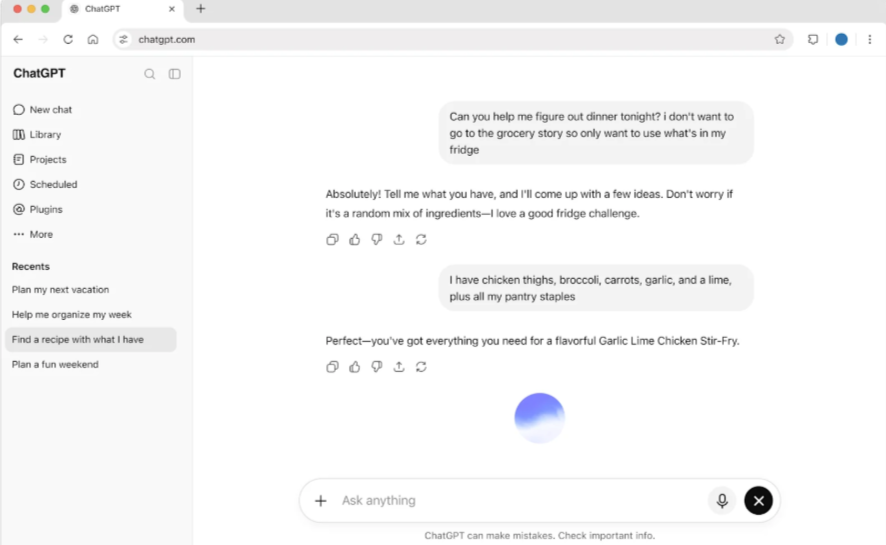
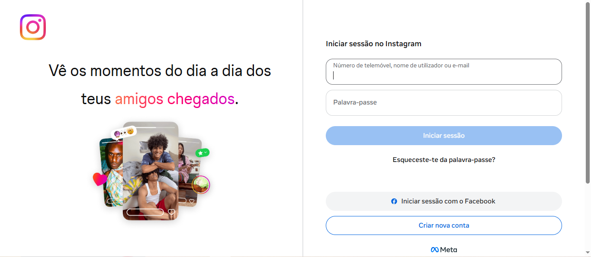
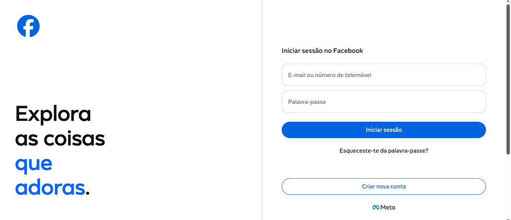
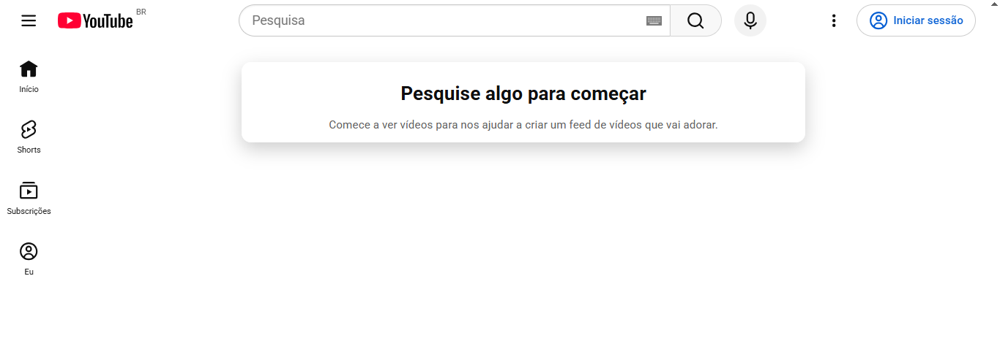

Fonte: (Google, 2026).
Acessar o Google

Fonte: (ChatGPT, 2026).
Acessar o ChatGPT

Fonte: (Instagram, 2026).
Acessar o Instagram

Fonte: (Facebook, 2026).
Acessar o Facebook

Fonte: (YouTube, 2026).
Acessar o YouTube